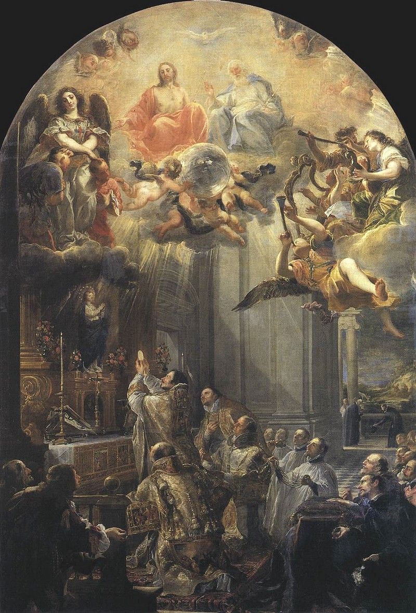

History
Eight centuries of redemption
The Trinitarian Order began in a hermitage at Cerfroid, near Paris, and was approved by Pope Innocent III in 1198. Its history runs through medieval ransoms, a Spanish reform, revolution and suppression, restoration, and a worldwide mission of mercy.

Timeline
- 1193The vision at first Mass
On 28 January, according to the Order’s tradition, John de Matha saw Christ the Redeemer between two captives while celebrating his first Mass in Paris. He understood his vocation as the ransom of Christians held in slavery.
- c. 1193–1194Cerfroid
John gathered a community of hermits at Cerfroid, in the diocese of Meaux. The Order’s own accounts date the foundation to 1193 in one place and 1194 in another; the first community is remembered as the mother house.
- 1198Papal approval
Pope Innocent III approved the Order and its Rule on 17 December 1198 with the bull Operante divinae dispositionis clementia.
- 1199The first redemption
The Order organized an early redemption expedition, and on 8 March 1199 Innocent III recommended the Trinitarians to the ruler of Morocco. The first generation of friars soon established houses across France, Italy, Spain, Portugal, and the British Isles.
- 1200English friars and 186 captives
According to the older chronicles, two English Trinitarians went to Morocco and returned with 186 liberated Christians. The detail is preserved in secondary accounts and illustrates the scale the redemptions could reach.
- 1209San Tommaso in Formis
Innocent III gave the church and hospital of San Tommaso in Formis on the Caelian Hill to the Order. John de Matha made it his Roman residence, and its mosaic of Christ between two captives became the Order’s emblem.
- 1213Death of the founder
John de Matha died in Rome on 17 December 1213 and was buried in San Tommaso in Formis.
- 1228The Mathurins
In northern France the Trinitarians were known as Mathurins, from the church of Saint-Mathurin in Paris, where they were based from 1228.
- 13th–15th c.Growth and decline
The first generation counted some fifty foundations. By the end of the Middle Ages the Order had twelve provinces and about 150 houses, but it also passed through periods of difficulty and decline.
- 1599The reform of St. John Baptist
St. John Baptist of the Conception (1561–1613) established a reformed, discalced branch in Spain. Pope Clement VIII approved the Congregation of the Reformed and Discalced Trinitarians with the brief Ad militantes Ecclesiae on 20 August 1599.
- 1655The relics leave Rome
The body of St. John de Matha was taken privately from San Tommaso in Formis to Madrid. In 1966 most of the relics were moved to the Trinitarian college in Salamanca; a portion remained with the contemplative nuns in Madrid.
- 18th–19th c.Revolution and suppression
Revolutionary and government suppressions, civil war, and the loss of houses and novitiates reduced the Order severely. The restoration began slowly in the nineteenth century, especially in Italy and Spain.
- 1906The United States
Trinitarians from Italy arrived in the United States. In 1911 the Order was entrusted with the care of Italian immigrants at Our Lady of Mount Carmel Parish in Asbury Park, New Jersey.
- 1931Hyattsville
St. John de Matha Monastery was established in Hyattsville, Maryland. Parishes and ministries followed from the East Coast to Texas.
- 1946DeMatha Catholic High School
The Order opened DeMatha Catholic High School in Hyattsville, Maryland, which remains a major Trinitarian educational work.
- 1950The U.S. Province
The Province of the Immaculate Heart of Mary was established, with Fr. Cyprian Nusca, O.S.S.T., as its first Minister Provincial.
- 1983–1984New Constitutions
The General Chapter of 1983 approved new Constitutions, confirmed by Rome in 1984. They recovered the founding charism and set out the Order’s identity as a communion of Trinitarian contemplation and redemptive service.
- 1998Eight hundred years
The Order marked the eighth centenary of the approval of its Rule. Pope John Paul II wrote to the Minister General on 7 June 1998, praising the Order’s service of the oppressed and the poor.
- 2000The lay rule of life
The Holy See approved The Trinitarian Way as a rule of life for the lay groups associated with the Order, including the Third Order Secular and confraternities.
- 2018The Philippines
The U.S. Province established a new foundation in the Philippines, primarily as a formation house for Trinitarian seminarians, with a ministry among the poor and those persecuted for the faith.
- TodayA worldwide mission
The Order has four provinces, one vice-province, and four vicariates, with 559 religious. The wider Trinitarian Family is served by the International Trinitarian Solidarity network, present in 32 countries.
Founding at Cerfroid
John de Matha was born at Faucon in Provence around 1154. He studied in Paris, where he later taught theology, and was ordained a priest. His first Mass, on 28 January 1193, is the point at which the Order’s tradition places the vision that gave the Trinitarian project its shape.
John withdrew to Cerfroid, a wooded place about seventy kilometres north-east of Paris, and joined a group of hermits. The community that formed there became the first Trinitarian house. The Rule approved in 1198 joined a common religious life to the work of ransoming captives, and the Order’s houses were called houses of the Most Holy Trinity.
St. Felix de Valois is venerated as co-founder in the Order’s tradition. The surviving documentation for his life is weaker than for John’s, a point the Order itself acknowledges. His role in the community’s foundation and in its contemplative dimension has been treasured by later Trinitarians, especially by the reformers.
How redemption worked
The medieval Trinitarians were not a military order. Their weapon was negotiation, and their work depended on money, safe conduct, local contacts, and trustworthy accounts. The tertia pars set aside one third of income for ransoms; the rest supported the community and its works of mercy.
Ransomers travelled to the frontiers of Latin Christendom and into Muslim lands, negotiated the release of captives, and returned with the freed. The Order also kept houses of hospitality for former captives, pilgrims, the sick, and the poor. San Tommaso in Formis in Rome was both a church and a hospital.
The Order’s early redemptions were remembered as signs of a wider peacemaking vocation. The Trinitarians sought to free captives on both sides of the Christian-Muslim frontier, and their houses became places of encounter and mercy rather than centres of military preparation.
Reform and restoration
The Trinitarian reform of the late sixteenth century was part of the wider Catholic reform after the Council of Trent. In Spain, a movement of recollection took shape at Valdepeñas. John Baptist of the Conception, a Trinitarian preacher and mystic, gave it decisive leadership. Clement VIII approved the reformed congregation in 1599, and it became the branch from which the modern Order principally descends.
Reform brought new houses, new writings, and a renewed emphasis on poverty, prayer, and the redemptive mission. It did not shelter the Order from the political and social upheavals that followed. Revolutionary governments suppressed religious houses, and the nineteenth century was a time of loss and slow recovery.
To the Americas
Italian Trinitarians arrived in the United States in 1906. The care of Italian immigrants at Asbury Park, New Jersey, was followed by parishes in Long Branch, New Jersey, Bristol, Pennsylvania, and Trenton, New Jersey. St. John de Matha Monastery in Hyattsville, Maryland, became a centre of formation and ministry.
Within forty years the Trinitarians were serving in parishes from the East Coast to Texas and had opened DeMatha Catholic High School. The Province of the Immaculate Heart of Mary was erected in 1950. In 2018 the Province established a foundation in the Philippines, chiefly for the formation of seminarians.
San Tommaso in Formis
The church and hospital of San Tommaso in Formis stand on the Caelian Hill in Rome, beside the Claudian aqueduct. Innocent III gave the complex to the Trinitarians in 1209. John de Matha made it his residence and was buried there in 1213.
Over the entrance to the old hospital is a Cosmatesque mosaic from the early thirteenth century. It shows Christ in glory between two chained captives, one white and one black, with the inscription Signum Ordinis Sanctae Trinitatis et Captivorum. The mosaic is the oldest visual statement of the Order’s identity: the Trinity, the Redeemer, and the captives in one image.
The church is not a parish. It remains a Trinitarian church and a place of pilgrimage, with Mass on Sundays and holy days.
Sources for this page
- Official Curia Generalizia, Storia.
- Official Curia Generalizia, Trinitarian saints.
- Official Curia Generalizia, San Tommaso in Formis.
- Official Curia Generalizia, Trinitarian identity today.
- Official U.S. Province, Our Roots.
- Official U.S. Province, Our Mission Today.
- Secondary Andrew Witko, The Order of the Holy Trinity and Captives (2008).
- Secondary Alban Butler, Butler’s Lives of the Saints, ed. Paul Burns (2000).
- Secondary The Catholic Encyclopedia (1912), “Order of Trinitarians”; Encyclopaedia Britannica (11th ed., 1911), “Trinitarians.”
- Secondary Wikipedia, “Trinitarians”, used for cross-checking dates and the 2000 approval of the lay rule.
Items marked Secondary are academic or reference works, not official publications of the Order. Official texts are normative where they differ.